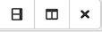

Introduction to Jupyter Notebooks
Contents
Introduction to Jupyter Notebooks#
Questions#
How do I work with and navigate Jupyter notebooks in Syzygy?
Learning Objectives#
In this chapter, you will learn to:
Open a Jupyter notebook
Navigate a Jupyter notebook
Enter and run code in a Jupyter notebook
Enter and format rich text in a Jupyter notebook, using Markdown
Introduction#
In this lab course you will spend a lot of time analyzing data using computer programs that you partially design yourself. A core part of the researcher’s toolkit these days is knowing how to use computers to manipulate and analyze data. In this class, Jupyter notebooks will provide a powerful platform for learning, coding, and presenting results of data analyses.
A Jupyter notebook “is a web application that allows you to create and share documents that contain live code, equations, visualizations and explanatory text” [www.jupyter.org]. What you are currently reading is actually a Jupyter notebook! (More on that later.) Rather than have everyone in class set up their home computer (which can be difficult across many different home computer types) we will instead use a web-based (or “cloud-based”) solution. The Jupyter notebooks that we will be using are hosted online at ubc.syzygy.ca so you don’t need to install any software on your own computer. Whenever you have access to the internet, you’ll have access to your programming environment.
If you have any trouble below, please ask a TA or instructor for help on Piazza!
You should be able to submit your tutorials (and later your tutorial resubmissions and project stages) by using the submission system that appears when you run your tutorial notebook. Try this early and ask for help if you run into trouble! If anything goes wrong with submission you may need to download your files from Jupyter and upload them to Canvas. In that case, we have a guide on how to download and submit your Jupyter notebooks that you can refer to.
Step 1: Setup
To get set up for CPSC 103 on ubc.syzygy.ca, you should open setup.ipynb and run it. Then, open no-syntax-warning.ipynb and run it.
Over the term, you may sometimes get a “404: Not Found” error when you try one of these links. That’s usually because the file is not yet released (e.g., tutorial solutions release about 15 minutes after the tutorial deadline). If you encounter this error when you think you shouldn’t, post on Piazza or e-mail cpsc103-vantage@cs.ubc.ca with details and ideally screenshots to show what’s happening so we can help.
The setup notebook contains code that will setup your Jupyter notebooks for this course. Run the code by pressing the run button:  . If it has worked properly, you should see a confirmation underneath the code that says “Setup succeeded!”. If you have trouble, please ask a TA or instructor for help!. A link to the specific JupyterHub URL for our class this semester is provided in the sidebar of this website.
. If it has worked properly, you should see a confirmation underneath the code that says “Setup succeeded!”. If you have trouble, please ask a TA or instructor for help!. A link to the specific JupyterHub URL for our class this semester is provided in the sidebar of this website.

Fig. 1 The Jupyter Project logo.#
UBC’s Syzygy lets everyone registered in the class log on to a website and access their own personal set of files. In addition, the instructor can distribute new files to students to work on.
We will focus primarily on Python in this class. Future readings and assignments will introduce the Python programming language to you and also teach you how to use it to analyze data.
However, for now we want to begin by understanding a bit more about Jupyter and the system we will be interacting with.
Step 2: Introductory Notebook
You can open this notebook!
Jupyter notebooks#
You are currently viewing a Jupyter notebook. Jupyter notebooks are composed of cells. Cells can be of three types: code, Markdown, or raw. This cell you’re reading is Markdown, a simple language for formatting rich text. The cell below is a code cell, where you can write and run Python commands. Raw cells are “raw” text — they aren’t fancy-formatted Markdown, and they aren’t run-able as code. They also aren’t terribly useful.
Cells have two modes: edit and command. Edit mode is indicated by a green border around the cell, while command mode has a blue border. In edit mode, you can type into the cell and edit it. In command mode, you can run the cell, or manipulate it in certain ways (e.g., deleting a whole cell, or moving it).
This text you are currently reading is a Markdown cell. If you are viewing it in Syzygy, and click once on this text, the cell should become active in command mode, so you should see a blue border around it. If you double-click on this (or any other Markdown) cell, the outline will turn green, the text will change to a fixed-width font and you’ll see the Markdown formatting tags (like # for headings). Try it! Then hit Shift & Enter to execute the cell (which applies and renders the Markdown formatting).
So in summary:
Single-clicking a cell will select it in Command mode
Double-clicking a cell will put it in Edit mode
Pressing the Shift & Enter keys on your keyboard simultaneously will execute a cell. Execution will format a Markdown cell, or run the code in a code cell.
Below is a code cell with some very simple Python code. You haven’t started learning Python yet, but as you can see, at its simplest Python can act like a calculator. Try executing the cell and see what happens.
1 + 1
2
Take note of a couple of things here. Firstly, The text to the left of the cell changed from In: []: to In [1]: (or some number). “In” stands for “input”, and the number indicates that the cell was run, and the numbers increase sequentially as you run cells. In general, it’s a good idea to run Jupyter notebook cells sequentially, from top to bottom. But sometimes, when you’re writing and debugging your code, you’ll run them many times before you get it right, and sometimes you’ll run a few cells and then go back and run them again. So the numbers are useful in keeping track of what you’ve done, in what order. If a process takes a while to run, then the cell will show In: [*]: while the cell is running.
The outputs (Out) are numbered to match the inputs. The more important thing to know about the Out[]: output is that it only reflects the last output from the cell. In the example above, that’s OK, but check out what happens when you run the cell below:
1 + 1
2 + 2
3 + 3
6
…you only see the output of the last line! This is normally not what you want. Thus in Jupyter if you want to see the output of commands you run in a cell, you should embed the command inside a print() statement, as shown below:
print(1 + 1)
print(2 + 2)
print(3 + 3)
2
4
6
Soon in this class, you’ll learn about data types. For now, it’s worth noting that if you want to output text in Python, you need to put it inside quotation marks (Python doesn’t care if you use single or double quotes, as long as you start and finish with the same one). So, running the cell below produces an error (do it!):
print(Hello World)
Cell In[4], line 1
print(Hello World)
^
SyntaxError: invalid syntax. Perhaps you forgot a comma?
But the following works as desired. Copy (type) the following text you see into the empty cell below.
print("Hello world!")
# Type your code here
Hello world!
# Even in code cells, you can add random commentary that's not Python code
# as long as you start each line with a hash mark, like this line is.
# These lines are called "comments" and it is good coding practice to use them.
# Comments allow you to make notes about your code. When you're starting out,
# you may want to add comments so that the next time you look at your code,
# you remember what a particular line or section does. Or, you may want to
# leave a "note to self" if you want to come back and add things to a particular
# section later.
# Although Syzygy "wraps" your comments to the width of the window,
# not all programs do this. So it's good programming style to put in line breaks
# manually for your comments, like this.
# Run this cell. We'll use it later.
x = 1
Why Jupyter notebooks?#
As you’ve already begun to experience, the “notebook” interface is an approach to programming and data analysis which combines programming/analysis code with text, images, figure, animations, and other multimedia in the same document (see Figure 2). The idea for computational notebooks has been around for a long time (e.g., Mathematica is a commercial product that has long provided a notebook interface for data analysis and programming). However, Jupyter is now one of the leading tools that scientists, including those in biomechanics, neuroscience, and physiology, use to analyze their data and write code.


Fig. 2 A screenshot of a Jupyter Notebook. Notice how the document combines text, pictures and analysis code.#
There are several reasons for the popularity of Jupyter:
Jupyter is open source and free. This means it is not owned by any one person or company. Scientists and other programmers devote their time to improving Jupyter. The code is readable by anyone which means it is easier to catch bugs.
Jupyter works with several different programming languages including R, Python, Matlab and others which are popular for data analysis. In fact, the name “Jupyter” combines the names of three different languages, Julia, Python, and R.
Jupyter runs in a standard web browser. This means you can use Jupyter often on any computing device you like including low-cost laptops like Chromebooks/Netbooks or even a tablet like an iPad.
Jupyter has many extensions which provide interactive widgets, animations, beautiful graphics, etc…
Jupyter is fun! Once you get the hang of the notebook concept then it makes developing and debugging code a pretty fun experience.
Many companies use Jupyter internally and are looking to hire people with this skill!
External Reading
For assignment 0, please read this article r [].
The “notebook” and “kernel” concepts#
One sort of interesting feature of this class is that more or less everything uses Jupyter notebooks. This includes the class webpage and each chapter of the online textbook. In fact, the document you are reading was first entered in as a Jupyter notebook. Using Jupyterbook, these notebooks were converted to a webpage. However, you can easily open the notebook that was used to write this chapter and check out the code and run it yourself 1.
There are two key ways to do this. First, in the top right of this webpage you should see a little menu option that looks like this:


Fig. 3 The JupyterBook menus for our online textbook.#
The button with the little arrow pointing down will let you download the current chapter either as a .ipynb (i.e., a Jupyter notebook) or as a PDF. If you download the notebook to your computer you can easily upload it to a running Jupyter/JupyterHub instance. For example, if you login to the class JupyterHub you can upload the .ipynb, open it, and then begin interacting with it by executing the cells, editing them, and interacting with widgets and other interactive animations.
Even easier, if you are registered for the course (this will not work for people viewing these pages online) you can launch any of the chapters of the textbook on your own Jupyter instance by clicking on the buttons shown here:

Fig. 4 The JupyterBook menu to launch the current book notebook on your own personal Jupyterhub (registered students only).#
In addition, for most of the computer-generated graphs and tables in the book you can view the code used to create the figure. Just look for something that looks like this:

Fig. 5 Click this button to reveal the python code used to generate the figure, table, graph or other output.#
The key to Jupyter is the concept of a computational notebook. A computational notebook is a document-based approach to structuring data analysis and programming. A notebook appears and acts similar to other programs you are familiar with like Excel or Google Sheets (spreadsheets) or Word or Google Docs (word processor). These programs provide ways for you to enter information into documents and to save those file, send them to others, copy-paste text, alter the formatting, etc…
We will primarily use the “classic” Jupyter Notebook interface which consists of a single document which you interact with. There is a newer interface called JupyterLab which looks more like Matlab or RStudio’s interface, allowing multiple windows and views of the running code. The traditional notebook interface is prefered here primarily because it simple and faciliates reading along.
A computational notebook typically is made up of a set of elements called “cells” that group little bits of information together. A notebook document (usually ending with the .ipynb extension on the file name) is a list of cells arranged from the top of the document to the bottom. Cells can contain several types of information including code, text, images and so forth. You develop your project by creating new cells, entering information, reordering cells, and saving the results.
The key element which makes a notebook “computational” is that it can be linked to a computing engine known as a “kernel” which can run on the same computer or another computer using the Internet. The kernel is separate from the notebook and can for instance be stopped and started independently from the program displaying the notebook itself. The magic happens when a cell is “executed”, which refers simply to making the code in the cell “go”. When this happens the code from the cell that was executed is sent to the computational kernel and this kernel will run the sequence of commands contained within the cell. Any results such as figures or printouts from the results of that code running will be sent to the notebook from the kernel and will be inserted beneath the cell which was just executed. A diagram of the basic conceptual idea is shown in Figure 6.


Fig. 6 The flow between the notebook and the kernel. Cells, when they are executed, are sent to the computational kernel which is an independent piece of software that can be started and stopped independently from the notebook.#
Caution: The Notebook State and Kernel State are not the Same!#
One somewhat confusing aspect of Jupyter for beginners is that the notebook is simply a way to organize information and the order of information in a notebook has nothing to do with the order in which code has been executed on the server.
Instead, each time you execute a cell, the commands from that cell are sent to the kernel, run, and then returned. Usually it make sense to organize your code so that multiple cells are arranged in order from the top of the document to the bottom. You would then execute the first cell, then the second cell, and so forth.
However, and this is really important, you don’t have to execute the cells in order. You can execute the third cell before the second or first cell if you want. This just means that the code in the third cell would be sent to the kernel first and then the other cells would be sent. This means that the order of the cells in the notebook document are really just for presentation, and it is up to you to “run/execute” the cells in whatever order you want.
This is mostly helpful because when you are doing an analysis you might want to go back up to the top and change something and then continue where you left off. To do that you could scroll back to a earlier cell, change it, then execute it and then go back down to the beginning of the script.
However, things can get confusing. If you delete a cell it doesn’t mean the code was “undone”. The kernel doesn’t know anything about any edits you make to the notebook interface. All it does is receive code when you send it via the “execute cell” command and then it waits. This can mean that the “state” or current status of the kernel can at times be different from what your cells or notebook look like. One easy option to deal with this is that if things get too far out of whack you can simply restart the kernel. This will erase its current state and set it back to a fresh start. However, then you need to re-execute all of the cells in your notebook to get back to where you were.
The best analogy is like telling your friend how to cook a meal for you over the phone. You have the instructions in front of you (your notebook) and you tell your friend (the kernel) what to do. If you read the instructions out of order, your friend can’t tell the difference. They just know each step you told them to do and follow it. It is up to you to direct the instructions so they arrive to your friend (the kernel) in the right order. And of course if things get confused you can just tell your friend to start over from stratch and begin again.
At first this can be confusing but eventually you get the hang of it. It is one source of bugs/errors in programming in Jupyter notebooks, though, so you want to be mindful of that. Overall, you will find Jupyter notebooks to be an incredibly useful tool as you develop your programming and data analysis skills.
Here is a just a small smattering of some of the awesome ways people have put Jupyter to use.

Fig. 7 Important facts that the notebook interface and the order things are sent to the kernel is up to you. Also cells can be deleted or added in the notebook interface and the kernel doesn’t know this.#
A bit more about Jupyter notebooks#
The top of this window probably looks a bit intimidating, with a lot of menus and buttons. You’ll gradually get familiar with many of these functions, although some you may never use in this course. For now, we’ll go through the most important functions and concepts.
Working With Files#
In general, when using Syzygy you don’t need to explicitly save files. Notebooks are auto-saved so you don’t have to worry about it! But there is a button to manually save between auto-saves.
Although for most of your work you will receive assignments with pre-made files to work in, for projects, for practice, or just for fun, you can create new files — including Jupyter notebooks but a variety of others as well. The File > New menu item will give you the options for different types of files you can create. The Filemenu also provides options for downloading your notebook files, including converting them from Jupyter notebooks to PDFs or other formats.
You can have multiple files open at once, and they appear as tabs at the top of the Syzygy window. In general, the tabs/files you have open will stay there even when you close your browser window/tab or log out, so the next time you connect to Syzygy you’ll see those tabs still there. HOWEVER (and this is important), even if you leave your browser with the Syzygy window/tab open on your computer, Syzygy will “terminate” your running notebook after about 2 hours.
If you have multiple files open, normally they’ll just appear as tabs across the top. However, over in the top right section of the window, you’ll find these buttons:  which allow you to divide the window into multiple “frames” and view multiple files at one time; each pane is itself sub-dividable into more frames!
Pro tip: Notebook files can get really long. Syzygy has a “Contents” button that will show you a table of contents for a notebook file. It makes this automatically from all the Markdown headings it finds. Find the Contents button above and click it to see.
Running Kernels, and Items in Memory#
This may seem contradictory: how is it that the file is still open, but the notebook is terminated? The answer lies in the fact that when you open a notebook file, you are also starting a new Python kernel — a live, running instance of Python that will interpret your Python commands and produce output. Remember: The notebook and kernel states are not the same! Each notebook you open will start a new Python kernel. As long as the kernel is running, the things you do in Python will be stored in memory (RAM). This will make more sense as you start to use Python, but when you’re running Python, you generally don’t just run commands and get output. You also read data files into memory, and store the results of one command in memory for use in the next command. For example, a bit earlier in this notebook you were instructed to run a cell with the code:
x = 1
This assigned a value of 1 to a variable named x. This is now stored in RAM inside this notebook’s kernel, so now in the cell below if you type
print(x) you will get the output 1, because the variable x was stored in memory.
However, if the notebook’s kernel terminates, then everything that was held in memory is erased. The next time you open or start to use the notebook, if you tried to run that print(x) command without running the cells above it, you would get an error, because x is no longer in memory. You would need to start at the top of the file and run all the commands again.
In general, this isn’t a big deal. Python is very efficient, and for the most part we are working with reasonably small data sets so your code should not take long to run or re-run. It is important to understand this, though, because you will get confusing errors if you come back to your work after several hours, and try to just pick up where you left off.
If you’re wondering why kernels are automatically terminated, it’s because Syzygy runs on cloud servers. Every active kernel is consuming resources (computer hardware and energy) at a data centre somewhere. Terminating “idle” kernels saves Syzygy’s operator money, as well as reducing the energy demands of the data centre.
You’ll see at the top that there is a Kernel menu. This menu has several options, including restarting a kernel manually (which will clear everything out of memory, somthing you may want to do sometimes as you’re working in order to get a fresh start rather than trying to un-do errors you made), running all the cells in the notebook (an easy way to get back to where you left off, when your kernel terminated), and clearing all of the output in the notebook.
Pro tip: In general, it’s a good idea to clear all output from a notebook when you restart the kernel, so you don’t get confused between old and new outputs.
Working in Notebooks#
There is an undo function, which works similarly to other software you’ll have used, sequentially undoing things you’ve typed in cells. Importantly, the undo function does not undo the results of commands you’ve run in Python. Continuing with our previous example, this means that if you ran the Python command x = 1, then ran “undo”, Jupyter would delete your typing, x = 1. However, in the kernel’s memory, x would still equal 1. So you could run print(x) and the output would still be 1.
Syzygy also offers Time Travel. This allows you to revert your notebook file to some specific, previous state. It’s essentially like hitting “undo” a large (and very specific) number of times, without the risk of carpal tunnel syndrome.
You can insert a new cell right below whatever cell is currently active, either by pressing the “+” button under the menu, or using the Insert menu, or, as long as no cell is in edit mode, pressing the b key on the keyboard to insert a new cell below the selected cell (or a to insert a cell above the selected one). The Cell menu also has a variety of useful tools for working with cells, which are pretty self-explanatory if you look at them.
We encourage you to peruse the menus and randomly push buttons and try things in a notebook file. You will not break the internet (probably). Maybe first create a new notebook file first, though, and don’t mess this one up!
Help!#
Syzygy has extensive documentation. You may want to start here.
Markdown#
Markdown is a “plain text formatting syntax” and a tool for converting such plain text to a formatted version, such as HTML for display in a web page. There is a fundamental difference between plain text (.txt files) versus rich text (such as in Markdown, and also Microsoft Word or Google Docs). Rich text files display the text that you enter, and the formatting you choose (e.g., boldface), and hide the information telling your computer to make that text boldface “behind the scenes” in a complex file. In contrast, when you open a plain text file, what you see is literally the contents of that file, with nothing hiding in the background (except for a couple of hidden features, like markers for line breaks and tabs).
So a plain text file can never contain formatting like boldface or italic. Markdown allows you to create a text file with special codes that you type to “mark” certain text for formatting, and then run a program on that text file to produce a formatted output. For example, text surrounded by *one asterisk* shows up in italics; text surrounded by **two asterisks** shows up as boldface.
Lists in Markdown#
You can make a bulleted list by starting each line of the list with a hyphen (-) followed by a space:
this is a first list item
this is another list item
You can generate a numbered list by starting each line with a number, then a period, then a space. A nice feature is that if you start every item in your list with 1. , Markdown will auto-number your items:
This is item 1
This is item 2, even though the Markdown starts with
1.
Different levels of headings#
Different levels of headings can be indicated with hash marks; the more hash marks, the more deeply embedded a header is. So, the following:
# Heading 1= first-level heading (like the title at the very top of this page)## Heading 2= second-level heading (like the title of the section titled ‘Markdown’)### Heading 3= third-level heading (heading of this section)etc.
While originally Markdown was designed to simplify creating web pages in HTML (the coding language for web pages), there are now a huge number of output formats available (e.g., PDF, Microsoft Word, ePub) in different applications, and many Markdown apps that allow you write and edit Markdown files while viewing a preview of the formatted output in another window alongside your Markdown text file.
HTML — and by extension, Markdown — embodies a design philosophy of separating the content of a document from its formatting. That is, when writing the content, you focus on writing, not how it’s going to look, and then later, you apply formatting to make it look a certain way. This means that the same document can be formatted in virtually any possible way, with different fonts, sizes, etc.. It also provides consistency (e.g., you don’t have to remember to manually make every first-level heading a specific larger font size, and bold) and makes it very easy to produce professional-looking output without professional web design skills.
Exercise#
Create a cell below this one, convert it to Markdown, and use Markdown to do the following:
your name, with your last name in bold
a bulleted list of names of people in your family
a second-level heading that reads “Education”
a numbered list of educational attainments, including your high school and any university degrees
Note: By default, new cells are code cells. Use the drop-down menu at the top (which will say “code”) to change it to a Markdown cell.
- 1
The book chapters have some additional formatting for the web that you might not see in a regular notebook. However most of this just looks like more complex Markdown.